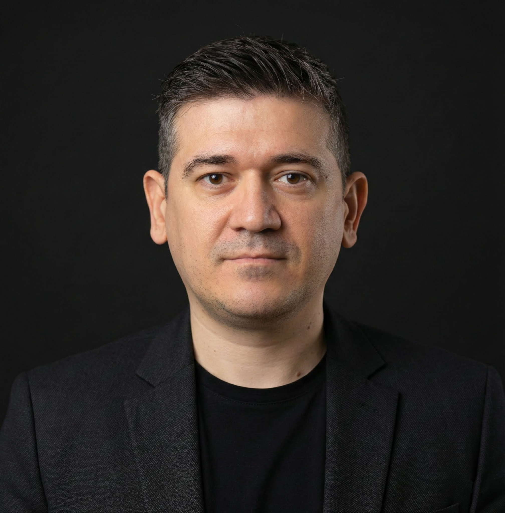
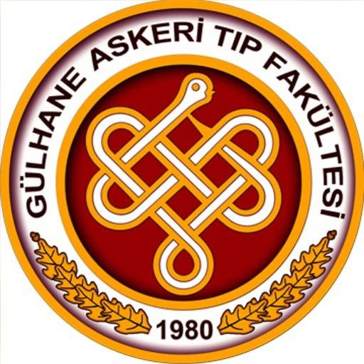

Göğüs cerrahisi · İstanbul
Op. Dr.
ÖmerYavuz
Göğüs Cerrahisi Uzmanı
Başakşehir Çam ve Sakura
Şehir Hastanesi

Fakülte
Gülhane Askeri Tıp Fakültesi / AnkaraUzmanlık
Gülhane Askeri Tıp Akademisi Haydarpaşa Eğitim ve Araştırma Hastanesi / İstanbulÖmer Yavuz
Hakkımda.
- Tıp fakültesi
- Ankara Gülhane Askeri Tıp Fakültesi
- Uzmanlık
- Gülhane Askeri Tıp Akademisi Haydarpaşa Eğitim ve Araştırma Hastanesi Göğüs Cerrahisi Kliniği
- Mevcut görev yeri
- Başakşehir Çam ve Sakura Şehir Hastanesi
Klinik çalışmalar
Çalışma alanlarım.
Her başlık altında ilgili hastalık ve cerrahi yaklaşıma ilişkin kısa açıklamaları bulabilirsiniz.
Akciğer kanseri cerrahisi
Cerrahi tedavinin yeri ve ameliyat öncesi değerlendirme.
Minimal invaziv cerrahi
Video yardımlı ve robot yardımlı göğüs cerrahisi.
Mediasten hastalıkları
İki akciğer arasında yer alan bölgenin kist ve tümörleri.
Göğüs duvarı cerrahisi
Göğüs kafesi şekil bozuklukları ve göğüs duvarı tümörleri.
Port kateter
Uzun süreli damar erişimi, başvuru ve bakım.
Akciğer cerrahisi
Akciğer kanseri
cerrahisi.
Cerrahi, uygun hastalarda akciğer kanseri tedavisinin bir parçasıdır.
Nasıl planlanır?
Tedavi planında tümörün türü, yerleşimi ve yaygınlığı ile hastanın genel sağlık durumu birlikte değerlendirilir. Cerrahi, bazı hastalarda diğer kanser tedavileriyle birlikte uygulanabilir.
Ameliyatın kapsamı
Ameliyatta çıkarılacak akciğer dokusunun miktarı hastalığın özelliklerine göre belirlenir. Cerrahi seçenekler ve iyileşme süreci, ameliyat öncesi görüşmede hastaya özel olarak ele alınır.
Bilgi kaynağı: NHS · Akciğer kanseri tedavisi
Cerrahi yaklaşımlar
Minimal invaziv
cerrahi.
Göğüs boşluğuna küçük kesilerden ulaşılarak, kamera ve özel cerrahi aletler yardımıyla yapılan ameliyatları kapsar.
VATS ve robot yardımlı cerrahi
VATS, video yardımlı torakoskopik cerrahinin kısaltmasıdır. Robot yardımlı cerrahide ise cerrah, ameliyat aletlerini bir konsol üzerinden kontrol eder.
Yöntem seçimi
Uygun yaklaşım, hastalığın özellikleri ve planlanan işleme göre belirlenir. Her ameliyatın kapalı yöntemle yapılması mümkün olmayabilir; gerektiğinde açık cerrahi uygulanabilir.
Bilgi kaynağı: Mayo Clinic · VATS
Mediasten
Mediasten
hastalıkları.
Mediasten, göğüs boşluğunda iki akciğer arasında kalan bölgedir.
Çalışma alanı
Bu bölgede yer alan kist ve tümörlerin tanısı ve cerrahi tedavisi, göğüs cerrahisinin çalışma alanları arasındadır.
Değerlendirme
İncelemeler, oluşumun yerleşimi ve çevre yapılarla ilişkisi dikkate alınarak planlanır. Takip, ileri inceleme veya cerrahi gereksinimi her hasta için ayrı değerlendirilir.
Göğüs duvarı
Göğüs duvarı
cerrahisi.
Göğüs kafesi şekil bozuklukları ve göğüs duvarı tümörleri bu çalışma alanında değerlendirilir.
Şekil bozuklukları
Kunduracı göğsü (pektus ekskavatum) ve güvercin göğsü (pektus karinatum), göğüs kafesinin şekil bozuklukları arasındadır. Tedavi gereksinimi ve yöntem seçimi kişiye özel değerlendirilir.
Göğüs duvarı tümörleri
Tedavi planı, kitlenin özellikleri ve tanısal değerlendirme sonucuna göre belirlenir. Cerrahi gereken hastalarda çıkarılacak dokular ve onarım gereksinimi birlikte ele alınır.
Damar erişimi
Port kateter.
Kemoterapi ve uzun süreli damar içi tedavilerde kullanılabilen, cilt altına yerleştirilen bir damar erişim sistemidir.
Başvuru süreci
Port gereksinimi, tedavinizi düzenleyen hekim tarafından değerlendirilir. İşlem öncesinde muayene ve gerekli tetkikler yapılarak yerleştirme planı oluşturulur.
Kullanım ve bakım
Portun kullanımı ve bakımı eğitimli sağlık personeli tarafından gerçekleştirilir. İşlem sonrası bakım ve kontrol planı, tedavi sürecinize göre açıklanır.
Ayrıntılı port kateter bilgilendirmesi ↗Akademik çalışmalar
Yayınlar ve
akademik profiller.
Bu bölümün içeriği daha sonra eklenecektir.
Seçilmiş yayınlar
Yayın listesi henüz paylaşılmamıştır.
Akademik profiller
- Google ScholarYakında
- ORCIDYakında
- Web of ScienceYakında
- ISNIYakında
İletişim